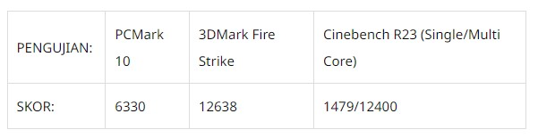

5 Rekomendasi Laptop Gaming Murah Berkualitas Tahun 2023
Laptop gaming murah adalah jenis laptop yang banyak dicari. Karena orang pasti mau laptop dengan harga yang murah tapi punya spesifikasi bagus. Hanya saja perlu diingat, untuk sebuah kata murah pada kategori laptop itu tolok ukurnya adalah harga laptop gaming mahal pada umumnya. Untuk diketahui, harga laptop gaming rata-rata adalah belasan juta, puluhan juta, bahkan ada yang mendekati sampai ratusan juta. Itu berarti harga sebuah laptop gaming berharga murah berada di bawah rata-rata laptop gaming kebanyakan. Untuk itu, penting digarisbawahi definisi murah pada artikel laptop gaming murah ini berpatokan pada laptop gaming yang harganya belasan juta rupiah. Jadi, sepakati dulu hal ini agar Anda bisa menentukan kategori laptop gaming murah. Karena sesungguhnya patokan harga laptop gaming murah berbeda dengan laptop murah umum 3 jutaan.
Nah, daftar laptop gaming murah yang Carisinyal kumpulkan ini umumnya berada di kisaran harga 12 sampai 16 juta. Jika Anda ingin laptop gaming murah di bawah 10 juta atau sekitar 10 jutaan, Anda bisa menyimak artikel "Laptop Gaming 10 Jutaan Terbaik".
Tanpa berlama-lama lagi, berikut daftar laptop gaming murah yang bisa jadi referensi untuk Anda.
Asus Rog Strix
Asus ROG Strix G15, Kombo Ryzen 6000 dan RTX 3050
Desain dan Layar
Asus ROG Strix G15 (2022) secara keseluruhan hadir dengan desain yang tidak jauh berbeda dari generasi sebelumnya. Hal ini bisa dilihat dari desain engsel, dan tepi bawah layar yang asimetris karena bentuk lubang ventilasi tambahan
Desain lain yang masih dihadirkan adalah lightbar di tepi bagian bawah bodi laptop yang memanjang dari sisi kiri ke kanan. Di sini disajikan efek RGB yang membuat Asus ROG Strix G15 (2022) punya tampilan menarik perhatian, terutama saat RGB backlit juga aktif menyala.
Di bagian belakang bisa terlihat Armor Caps yang bisa diganti pilihan warnanya. Meskipun hanya menjadi sebuah gimmick, menurut opini kami, tapi setidaknya ini bisa menjadi identitas Asus ROG Strix G Series.
Asus ROG Strix G15 (2022) memiliki bodi yang tidak begitu ramping tapi masih agak ringan, ketebalannya 2,59 cm dengan bobot 2,10 kilogram. Di bagian keyboard ditawarkan area yang sangat lega terutama di area trackpad dan palm rest. Di sini juga masih disediakan tombol pintas ke kontrol multimedia dan menu Armoury Crate. Kini beralih ke bagian layar Asus ROG Strix G145 (2022), Medcom.id mendapatkan varian ukuran 15,6 inci FHD (1920x1080) dengan panel IPS-level yang memiliki refresh rate tertinggi 144Hz.
Pengguna yang akan mengandalkan laptop ini untuk live streaming atau setidaknya video conference akan kesulitan karena Asus ROG Strix G15 (2022) tidak menyediakan webcam.
Fitur
Di sini juga masih disediakan tombol pintas ke kontrol multimedia dan menu Armoury Crate. Kini beralih ke bagian layar Asus ROG Strix G145 (2022), Medcom.id mendapatkan varian ukuran 15,6 inci FHD (1920x1080) dengan panel IPS-level yang memiliki refresh rate tertinggi 144Hz.
Pengguna yang akan mengandalkan laptop ini untuk live streaming atau setidaknya video conference akan kesulitan karena Asus ROG Strix G15 (2022) tidak menyediakan webcam.
Asus ROG Strix G15 (2022) sudah menyediakan dukungan koneksi ke WiFi 6E dan Bluetooth 5.2 serta tersedia microphone dengan fitur AI noise cancelling. Fitur lain yang berada di bagian dalam juga membuat kinerja laptop gaming ini makin mumpuni.
Di dalamnya ada chip MUX Switch yang dapat mengatur jalur data visual yang ditampilkan di layar laptop. Jadi jalur data visual dari discrete chip grafis bisa dialihkan langsung ke layar laptop tanpa harus melalui prosesor dan integrated chip grafis-nya.
ASUS ROG Strix G15 (2022) memiliki rancangan sistem pendingin bernama ROG Intelligent Cooling untuk menjaga suhu tetap di bawah kendali. Di sini digunakan material Liquid Metal sebagai thermal compound pada prosesor, efek yang dihasilkan adalah suhu tetap bisa terjaga hingga 16 derajat lebih rendah dibandingkan perangkat yang masih menggunakan thermal paste biasa.
ASUS ROG Strix G15 (2022) punya empat ventilasi untuk pembuangan suhu panas yang efisien. Di bagian kipas pendingin digunakan model Arc Flow Fans yang diperbarui. Kinerja kipas pendingin lebih senyap dengan desain kipas Arc Flow Fans sekaligus operasional 0dB.
Fitur Anti-Dust Tunnels juga diperbarui dengan ruang yang lebih lebar sehingga semakin cepat debu yang masuk ke sistem pendingin dikeluarkan sebelum menumpuk.
Performa dan Baterai
Medcom.id menguji Asus ROG Strix G15 (2022) dengan AMD Ryzen 7 6800H dan Nvidia GeForce RTX 3050 4GB GDDR6. Di sini tersedia RAM 8GB DDR5dan storage berbasis M.2 NVMe PCIe 4.0 SSD 512GB.
Pengujian dilakukan dengan menggunakan sejumlah software seperti PCMak 10 dan 3DMark dari UL Benchmarks dan Cinebench R23. Skor yang dihasilkan menunjukkan performa Asus ROG Strix G15 (2022) sangat tangguh di kelas spesifikasinya.

Di pengujian daya tahan pada mode kinerja Silent yang diatur lewat Armoury Crate, simulasi PCMark 10 Modern Office membuktikan laptop gaming ini bisa bertahan hingga 8 jam 16 menit dalam kondisi terhubung ke WiFi dan efek RGB nonaktif serta kecerahan layar di 30 persen.
Pengujian selanjutkan dilakukan menggunakan benchmark in-game dari Far Cry 6 di grafis High dan Cyberpunk 2077 di Ultra pada resolusi 1920x1080. Di sini dihasilkan average frame rate yang cukup memuaskan dan masih bisa lebih tinggi lagi apabila pengaturan grafis sedikit diturunkan.
Kesimpulan
Asus ROG Strix G15 (2022) dengan spesifikasi yang Medcom.id uji menawarkan performa tangguh meskipun hanya dibekali kartu grafis Nvidia GeForce RTX 3050 yang merupakan seri paling bawah dari RTX 30 Series.
Laptop gaming ini tersedia di Indonesia dengan banderol Rp21 juta, varian spesifikasi yang lebih tinggi lagi ditawarkan hingga Rp35,9 juta dengan pilihan kartu grafis Nvidia GeForce RTX 3060 dan RTX 3070 Ti.
Lenovo Legion 5
Tentu kalian sudah tidak asing dengan laptop gaming dari Lenovo yaitu Lenovo Legion 5. Nah, yang hadir untuk pengujian kali ini adalah versi terbaru -2022, yang sudah dilengkapi dengan berbagai peningkatan dari Lenovo, mulai dari hardware, performa, hingga desainnya.
Dari sisi hardware, Lenovo menanamkan prosesor terbaru dari AMD – Ryzen 6000 Series. Dengan arsitektur Zen 3+ dan fabrikasi 6nm, menawarkan performa maksimal tanpa mengorbankan efisiensi daya
Efisiensi daya yang baik juga membuat laptop ini punya daya tahan baterai yang panjang – seperti laptop gaming dengan prosesor AMD generasi sebelumnya.
Dari sisi desain, Lenovo Legion 5 2022 memiliki bodi yang 14% lebih tipis dibandingkan pendahulunya, hanya di 2.27 cm. Selain itu, ia juga memiliki sistem pendingin terbaru dari Lenovo, Legion Coldfront 4.0
Penasaran dengan upgrade lainnya? Kita simak di review lengkap Lenovo Legion 5 2022 berikut ini.
Spesifikasi Dasar
AMD Ryzen 7 6800H
Arsitektur Zen 3+
Rating TDP di 45W
8-Core/16-Thread
Base Clock 3.2 GHz/Max Boost Clock 4.7 GHz
16 MB Total L3 Cache
AMD Radeon Graphics 680M
12 Compute Cores
Total 768 Shader Units
512 MB VRAM
16 GB DDR5-4800
Menggunakan 2 keping SODIMM
Upgradeable hingga 64 GB
Karena sebagian kapasitas RAM digunakan oleh IGP, usable memory yang terbaca ada di kisaran 15.2 GB
512 GB SSD NVMe PCIe 4.0
Masih terdapat satu slot M.2 kosong yang mendukung PCIe Gen 4
NVIDIA GeForce RTX 3060 Laptop GPU
3840 CUDA Cores
6 GB GDDR6
Mendukung fitur Resizable BAR
Terdapat fitur Hybrid Mode pada software Lenovo Vantage yang dapat digunakan untuk me-nonaktifkan Integrated Graphics
512 GB SSD NVMe PCIe 4.0
Wi-Fi 6
Gigabit WiFi
Menduukung MU-MIMO
Bluetooth v5
Kapasitas Baterai 80 Wh
Bodi
Laptop ini hadir dengan form factor Clamshell/Laptop Klasik. Material yang digunakan yaitu Kombinasi Magnesium dan Aluminum untuk bagian atas, dan Polikarbonat di bagian bawah. Desain mirip seperti Legion 5 2021, namun terlihat lebih ringkas. Masih mempertahankan desain simpel-minimalis yang rapi khas Legion.
Laptop ini juga menggunakan engsel yang dinamai “Zero Bump Hinge.” Engsel layar dapat dibuka hingga 180 derajat. Untuk warna, disini menggunakan Storm Grey dengan Oil Resistant Polymer Painting.
Untuk dimensinya, laptop ini memiliki ukuran:
Panjang – 35.8 cm
Lebar – 26.2 cm
Tebal
99 cm di bagian tertipis
27 cm di bagian tertebal
Sebagai perbandingan, Legion 5 2021 punya ketebalan di 2.58 cm
Asus TUF Gaming
Persepsi masyarakat mengenai laptop gaming masih erat kaitannya dengan harga mahal. Sementara laptop gaming terjangkau pasti tampil tanpa fitur premium dan tidak seperti layaknya laptop gaming. Namun sejak tahun 2017, Asus mematahkan persepsi tersebut. Lini TUF Gaming menjadi andalan untuk menghadirkan fitur premium di sebuah laptop gaming yang terjangkau.
TUF Gaming memang berada di bawah dua lini laptop gaming Asus, yaitu ROG dan Strix dan tentu saja lini tersebut ditujukan untuk kalangan pengguna yang berbeda dan hadir dengan spesifikasi yang lebih rendah dari dua saudaranya tadi. Meski demikian, TUF Gaming masih tetap hadir dengan beragam fitur eksklusif dan premium yang tidak bisa didapatkan di laptop gaming lain sekelasnya.
Adapun seri terbaru dari TUF Gaming yang hadir di Indonesia adalah FX505. Laptop tersebut bisa dikatakan sebagai saudara dekat Asus ROG Strix GL504 karena memiliki bentuk bodi yang sangat mirip. Bahkan beberapa fitur premium yang ada di GL504 kembali dihadirkan oleh Asus di TUF Gaming FX505 ini. Seperti apa Asus TUF Gaming FX505? Mari kita bahas:
Jika Anda tahu bagaimana desain seri TUF Gaming sebelumnya, kami jamin Anda akan kaget melihat TUF Gaming FX505. Laptop gaming ini hadir dengan bodi yang lebih ramping dari sebelumnya. Tidak hanya itu, desainnya juga banyak berubah yang kini memiliki bodi lebih geometris dan tidak memiliki banyak lengkungan.
Bentuk seperti ini mempertegas TUF Gaming FX505 sebagai sebuah laptop gaming yang memang seharusnya memiliki desain lebih geometris. Oke, mari kita bahas notebook ini dari berbagai aspek.
Design
TUF Gaming FX505 didesain dengan tampilan modern dan tetap mencerminkan nuansa gaming. Bagian penutup layarnya hadir dengan desain heksagonal yang menampilkan nuansa kokoh. Terdapat juga desain yang melambangkan huruf X di bagian penutup layar. Semua dihadirkan dengan finishing menggunakan metode brushed atau sand-blasted, serta tampil dengan pilihan warna Gunmetal Grey atau Black.
Beralih ke layar, tersedia teknologi eksklusif NanoEdge Display di laptop gaming ini. Teknologi ini sering muncul di berbagai laptop premium Asus, salah satunya adalah ZenBook. Lewat NanoEdge Display, TUF Gaming FX505 dapat memiliki layar yang hadir dengan bezel sangat tipis, yaitu hanya 6,5mm saja. Berkat bezel yang tipis tersebut, bodi TUF Gaming FX505 bisa tampil lebih ramping secara keseluruhan.
TUF Gaming FX505 juga hadir dengan layar berpanel IPS-level dengan color gamut sRGB hingga 100%. Ditambah dengan dukungan viewing angle yang lebar, layar TUF Gaming FX505 mampu menghadirkan kualitas visual dengan kontras dan ketajaman warna yang konsisten. Hal tersebut tentu akan membuat pengalaman bermain game menjadi lebih immersive terutama pada game yang memang menampilkan lingkungan yang luas dan detail.
Spesifikasi
Sebagai sebuah laptop gaming, TUF Gaming FX505 hadir dengan spesifikasi khusus untuk bermain. Laptop yang kami uji kali ini adalah varian yang menggunakan prosesor Intel Core i7-8750H. Prosesor Intel Core generasi ke-8 tersebut sudah menggunakan srsitektur 14nm sehingga lebih hemat daya, namun memiliki performa kencang dengan kecepatan hingga 4.0GHz, serta memiliki konfigurasi 6 core 12 thread.
Jumlah core yang lebih banyak dari prosesor Intel Core i7 generasi sebelumnya tersebut membuat laptop ini dapat diandalkan untuk menjalankan beragam aplikasi yang menggunakan banyak core dan thread, seperti aplikasi video editing.
Prosesor bukan satu-satunya komponen yang membuat TUF Gaming FX505 tampil powerful dan bisa menjalankan berbagai game terkini. Chip grafis atau GPU juga memiliki peranan yang sangat penting karena game sangat membutuhkan performa pemrosesan grafis. Di TUF Gaming FX505G yang kami gunakan kali ini, GPU yang digunakan adalah Nvidia GeForce GTX 1050. Berikut ini spesifikasi lengkap Asus TUF Gaming FX505 yang kami ulas kali ini:
GPU Nvidia GeForce GTX 1050 yang ada di TUF Gaming FX505 ditemani oleh memori GDDR5 sebesar 4GB. Memori tersebut dipatok dengan kecepatan 1752MHz, sementara GPU GP107-nya memiliki kecepatan hingga 1493MHz. GPU tersebut juga sudah mendukung berbagai teknologi grafis terkini. Tidak heran jika TUF Gaming FX505 bisa menjalankan berbagai game AAA dengan cukup baik.
Fitur
Sebagaimana yang telah disebutkan sebelumnya, Asus memang menghadirkan beberapa fitur premium di TUF Gaming FX505, salah satunya adalah Hypercool Technology. Fitur pendinginan khusus ini juga digunakan di ROG Strix GL504 dan yang paling kami suka dari sistem pendingin ini adalah terdapatnya teknologi Anti-Dust Cooling.
Anti-Dust Cooling merupakan teknologi yang dipatenkan oleh ASUS untuk meningkatkan performa pendinginan dengan cara membuang debu dan partikel pengganggu lainnya sehingga tidak menyangkut di dalam jalur pendinginan laptop ini.
Teknologi Anti-Dust Cooling memanfaatkan sebuah terowongan khusus yang bisa membuang debu dan partikel lainnya ke luar laptop. Melalui teknologi ini, TUF Gaming FX505 debu tidak akan menumpuk di sistem pendingin sehingga performa laptop akan terjaga.
MSI Stealth 15M
Jakarta: Di tahun ini merek laptop gaming MSI menurut Medcom.id cukup menarik perhatian lantaran mereka menawarkan tidak cuma spesifikasi terkini tapi juga desain dan tampilan baru yang harus diakui sangat memikat.
Medcom.id berkesempatan menjajal MSI Stealth 15M (B12UE) yang dirils tahun ini sebagai lini laptop terbaru MSI dengan dukungan prosesor Intel Generasi ke-12 serta dilengkapi GPU Nvidia GeForce RTX 30 Series.
Design
Sesuai dengan namanya ‘stealth’ laptop gaming ini menawarkan tampilan low profile yang menurut kami menarik dan cocok bagi gamer yang ingin bisa menggunakan laptop mereka untuk bekerja dengan menampilkan kesan professional.
MSI Stealth 15M (B12UE) yang kami uji tampil dengan balutan warna hitam dengan desain logo MSI yang berada di tepi bodi belakang layarnya. Desain ini jauh lebih terlihat mewah dan menarik dibandingkan dahulu saat logo MSI ditaruh di bagian tengah.
Fitur
Layar laptop MSI Stealth 15M (B12UE) punya ukuran yang terasa lega berkat bezel tipis namun hal ini tidak membuatnya kehilangan fitur webcam. Di sini masih ada kamera dengan resolusi 720p 30fps.
Melihat laptop gaming ini dari sisi samping membuat kami menyadari bahwa engselnya mendukung layar untuk berputar hingga 180 derajat. Kemampuan ini mungkin ditujukan agar MSI Stealth 15M (B12UE) juga mendukung untuk kebutuhan berkolaborasi saat bekerja.
Laptop gaming ini tidak memiliki I/O Port yang cukup banyak, meskipun bagi kami sudah sangat cukup. Di sini hanya ada satu port USB 3.2 Type-A dengan dua USB 3.2 Type-C yang mendukung fitur DisplayPort, sisanya adalah lubang audio jack combo dan port HDMI 4K 60Hz.
Performa dan Baterai
MSI Stealth 15M (B12UE) yang Medcom.id uji menggunakan prosesor Intel Generasi ke-12 Core i7-1280P yang memiliki iGPU Intel Iris Xe, sementara GPU diskrit yang diandalkan adalah Nvidia GeForce RTX 3060.
Kapasitas RAM 16GB DDR4 dan storage 1TB M.2 NVMe PCIe Gen4. Di sini juga ada fitur koneksi WiFi 6 802.11ax dan Bluetooth 5.2. Medcom.id melakukan pengujian menggunakan software PCMark 10 dan 3DMark serta Cinebench R32. Hasil skornya tergolong tinggi.
Di pengujian daya tahan baterainya digunakan simulasi PCMark 10 skenario Modern Office dengan kondisi laptop tersambung ke WiFi, backlit nonaktif, baterai di pasang ke konfigurasi hemat daya termasuk mode di MSI Center serta kecerahan layar 30 persen.
Menurut pengujian daya tahannya bisa mencapai 4 jam 41 menit. Di pengujian benchmark game digunakan benchmark in-game yaitu Far Cry 6 dan Cyberpunk 2077 di preset Ultra dalam resolusi native 1920x1080. Average atau rata-rata frame rate di kedua game tercatat berada di atas 30fps.
Kesimpulan
MSI Stealth 15M (B12UE) menurut kami menawarkan laptop gaming tipis dan ringan yang patut dilirik. Performa yang ditawarkan sangat mumpuni. Meskipun belum menawarkan fitur terkini seperti RAM DDR5, namun hal ini seharusnya tidak menjadi masalah apalagi melihat kemampuan saat bermain game.
Alienware m15 R6
Masih ingat dengan logo laptop yang satu ini? Ya, ini adalah logo Alienware yang merupakan brand laptop gaming dari Dell yang sudah masuk secara resmi di Indonesia. Salah satu variannya pun telah tiba di lab pengujian Jagat Review. Unit yang kami uji kali ini adalah Alienware m15 R6 yang memadukan prosesor Intel Core Generasi ke-11 “Tiger Lake-H45” dan Discrete GPU RTX 30 Series.
Spesifikasi Utama
Intel Core i7 11800H
Codename – Tiger Lake-H
CPU Architecture – Willow Cove
Fabrikasi – 10 nm SuperFin
8-Core/16-Thread
TDP – 45 Watt
24 MB Intel Smart Cache
Integrated Graphics
Intel UHD Graphics dengan 32 Execution Units
Mendukung Intel Quick Sync Video untuk akselerasi secara Hardware saat Content Creation dan Content Consumption
Mendukung akselerasi secara Hardware untuk Video Codec AV1
Dapat dimanfaatkan saat Live Streaming Game dimana Intel UHD Graphics akan menangani proses Encoding untuk Video yang di Stream sementara Discrete GPU menangani Game-nya
Memory/RAM
32 GB DDR4 3200 MHz Dual Channel
Menggunakan RAM SO-DIMM jadi masih bisa diganti atau di Upgrade
Storage
1 TB SSD M.2 NVMe PCIe
Disediakan slot M.2 kedua jadi bisa nambah Storage tanpa mengganggu SSD bawaan
Tentunya setiap slot M.2 dilengkapi lempengan Heatsink untuk mendinginkan SSD
Discrete Graphics
NVIDIA GeForce RTX 3060 Laptop GPU dengan 6 GB GDDR6
Maximum Graphics Power – 130 Watt
Menurut NVIDIA, nilai Maximum Graphics Power RTX 3060 Laptop GPU harusnya di 115 Watt
Jadi RTX 3060 Laptop GPU di Alienware ini seharusnya punya performa di atas rata-rata
Fitur Resizable BAR pun sudah aktif di Laptop ini jadi performa Gaming-nya bakal kencang
Wireless Connectivity
Menggunakan modul Intel Killer Wi-Fi 6 AX1650i
Mendukung Wi-Fi ax
Mendukung Gigabit Wi-Fi
Mendukung Bluetooth V5.2
Battery Capacity
86 Wh
Operating System
Windows 10 yang nantinya dapat di Upgrade ke Windows 11 secara gratis